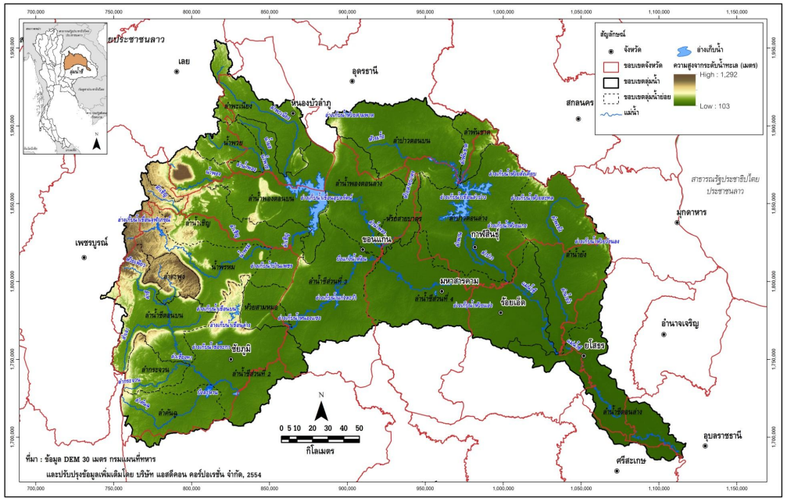

สารานุกรมลุ่มน้ำชี
มนตรี เกียรติเผ่าพันธ์
ผอ.สคพ.๑๐รองประธานกรรมการลุ่มน้ำชี คนที่ ๒
แม่น้ำชี
แม่น้ำชี เป็นแม่น้ำสายหลักและมีความยาวมากที่สุดในภาคตะวันออกเฉียงเหนือ (ภาคอีสาน) ของประเทศไทย
ข้อมูลโดยรวม
- ความยาว: ประมาณ ๗๖๕ กิโลเมตร
- พื้นที่ลุ่มน้ำ: ประมาณ ๔๙๔๘๐ ตารางกิโลเมตร
- ต้นกำเนิด: มาจากที่ราบด้านตะวันออกของทิวเขาเพชรบูรณ์ ในเขตจังหวัดชัยภูมิ
- เส้นทางไหลผ่าน: ไหลผ่านหลายจังหวัด เช่น ชัยภูมิ นครราชสีมา ขอนแก่น มหาสารคาม กาฬสินธุ์ ร้อยเอ็ด ยโสธร และศรีสะเกษ (บางส่วน)
- จุดสิ้นสุด: ไหลไปบรรจบกับแม่น้ำมูล ที่บ้านวังยาง อำเภอวารินชำราบ จังหวัดอุบลราชธานี
จังหวัดที่แม่น้ำชีไหลผ่าน
แม่น้ำชีไหลผ่านจังหวัดหลัก ๆ ในภาคตะวันออกเฉียงเหนือทั้งหมด ๙ จังหวัด (เก้าจังหวัด) โดยเรียงตามลำดับเส้นทางการไหลจากต้นกำเนิดจนบรรจบกับแม่น้ำมูล มีดังนี้:
- ชัยภูมิ (เป็นต้นกำเนิด)
- นครราชสีมา (ไหลผ่านบางส่วนทางเหนือ)
- ขอนแก่น
- มหาสารคาม
- กาฬสินธุ์
- ร้อยเอ็ด
- ยโสธร
- ศรีสะเกษ (บางส่วน)
- อุบลราชธานี (เป็นจังหวัดที่แม่น้ำชีไหลไปบรรจบกับแม่น้ำมูล)
แผนที่แม่น้ำชี

ที่มา : สถาบันสารสนเทศทรัพยากรน้ำและการเกษตร (องค์การมหาชน) (๒๕๕๕)
ลุ่มน้ำชี
ลุ่มน้ำชี (Chi River Basin) เป็นระบบลุ่มน้ำที่สำคัญและมีขนาดใหญ่ที่สุดใน ภาคตะวันออกเฉียงเหนือ (ภาคอีสาน) ของประเทศไทย
ลักษณะทางภูมิศาสตร์
- พื้นที่ลุ่มน้ำ: ประมาณ ๔๙๔๘๐ ตารางกิโลเมตร
- ลำน้ำสาขา: มีลำน้ำสาขาสำคัญหลายสาย เช่น ลำน้ำพรม ลำน้ำพอง ลำน้ำเซิน ลำน้ำปาว และลำน้ำยัง
- ความสำคัญ: เป็น เส้นเลือดใหญ่ ที่หล่อเลี้ยงชีวิตและเศรษฐกิจของภาคอีสาน ทั้งสำหรับการเกษตรกรรม การประมง และการอุปโภคบริโภค
คณะกรรมการลุ่มน้ำชี
คณะกรรมการลุ่มน้ำชีเป็นกลไกสำคัญในการบริหารจัดการทรัพยากรน้ำในพื้นที่ลุ่มน้ำชีทั้งหมด ตาม พระราชบัญญัติทรัพยากรน้ำ พ.ศ. ๒๕๖๑
องค์ประกอบหลัก
- ผู้ทรงคุณวุฒิ
- ผู้แทนภาครัฐ
- ผู้แทนองค์กรปกครองส่วนท้องถิ่น (อปท.)
- ผู้แทนองค์กรผู้ใช้น้ำ
หน้าที่และอำนาจสำคัญ
- การจัดทำแผนแม่บท (เสนอ กนช.)
- การจัดทำแผนป้องกันและแก้ไขภาวะน้ำแล้ง/น้ำท่วม
- การบริหารจัดการน้ำ และการให้ความเห็นชอบโครงการพัฒนา
ขั้นตอนการบริหารจัดการน้ำตามแผน
๑. ขั้นตอนการจัดทำแผนแม่บท
กระบวนการจัดทำแผนแม่บทในปัจจุบัน (ภายใต้ พ.ร.บ. ทรัพยากรน้ำ พ.ศ. ๒๕๖๑) มักจะถูกแบ่งออกเป็นขั้นตอนหลัก ๆ ๕ ขั้นตอน โดยเน้นการบูรณาการและการมีส่วนร่วมของประชาชนทุกภาคส่วนในลุ่มน้ำ:
- การรวบรวมและวิเคราะห์ข้อมูล (Inception and Data Gathering)
ขั้นตอนนี้คือการทำความเข้าใจสภาพปัจจุบันของลุ่มน้ำอย่างละเอียด:
- รวบรวมข้อมูลพื้นฐาน: สภาพภูมิประเทศ, อุตุนิยมวิทยา, อุทกวิทยา, ปริมาณน้ ำ, คุณภาพน้ำ, แล ะข้อมูลทางเศรษฐกิจ สังคม และสิ่งแวดล้อม
- วิเคราะห์ปัญหาและศักยภาพ: วิเคราะห์สถานการณ์น้ำในปัจจุบัน (เช่น พื้นที่เสี่ยงน้ำท่วม, น้ำแล้ง, ปัญหาน้ำเสีย) และศักยภาพในการพัฒนาแหล่งน้ำ
- จัดทำรายงานสถานการณ์: สรุปสภาพปัญหาและแนวโน้ม เพื่อเป็นพื้นฐานในการกำหนดทิศทาง
- การกำหนดวิสัยทัศน์และยุทธศาสตร์ (Vision and Strategy Setting)
เป็นขั้นตอนในการกำหนดทิศทางและเป้าหมายร่วมกัน:
- จัดเวทีรับฟังความคิดเห็น: ประชุมกับคณะกรรมการลุ่มน้ำ, องค์กรผู้ใช้น้ำ, ภาคประชาชน, และหน่วยงานที่เกี่ยวข้อง เพื่อกำหนด วิสัยทัศน์ และ เป้าหมาย ระยะยาวในการบริหารจัดการน้ำ
- กำหนดมาตรการ/ยุทธศาสตร์: กำหนดแนวทางหลักในการจัดการปัญหาและพัฒนาศักยภาพ เช่น ยุทธศาสตร์ด้านการป้องกันน้ำท่วม, การจัดการคุณภาพน้ำ, หรือการจัดสรรน้ำ
- การจัดทำแผนงานและโครงการ (Action Plan and Project Formulation)
เป็นขั้นตอนที่แปลงยุทธศาสตร์ให้เป็นรูปธรรม:
- จัดทำโครงการ: ระบุโครงการพัฒนาและบริหารจัดการน้ำที่จำเป็น โดยแบ่งเป็นโครงการระยะสั้น (๕ ปี), ระยะกลาง (๑๐ ปี), และระยะยาว (๒๐ ปี)
- จัดลำดับความสำคัญ: พิจารณาความเร่งด่วน, ความคุ้มค่า (Cost-Benefit Analysis), และผลกระทบทางสิ่งแวดล้อมและสังคม เพื่อจัดลำดับความสำคัญของแต่ละโครงการ
- ประมาณการงบประมาณ: คำนวณงบประมาณที่ต้องการสำหรับการดำเนินงานแต่ละโครงการ
- การรับฟังความคิดเห็นและปรับปรุงแผน (Public Consultation and Revision)
เพื่อให้แผนมีความสมบูรณ์และเป็นที่ยอมรับ:
- การประชาพิจารณ์: จัดประชุมเพื่อนำเสนอ (ร่าง) แผนแม่บทต่อสาธารณชนในพื้นที่ลุ่มน้ำ เพื่อรับฟังข้อคิดเห็น ข้อเสนอแนะ และข้อโต้แย้ง
- การปรับปรุงแผน: คณะกรรมการลุ่มน้ำนำข้อเสนอแนะที่ได้รับมาปรับปรุงและแก้ไขแผนแม่บทให้มีความเหมาะสมมากยิ่งขึ้น
- การอนุมัติและการนำไปใช้ (Approval and Implementation)
เป็นขั้นตอนสุดท้ายที่ทำให้แผนมีผลทางกฎหมายและปฏิบัติ:
- เสนอขออนุมัติ: คณะกรรมการลุ่มน้ำเสนอแผนที่ผ่านการปรับปรุงแล้วต่อ คณะกรรมการทรัพยากรน้ำแห่งชาติ (กนช.) และ/หรือ คณะรัฐมนตรี เพื่อพิจารณาให้ความเห็นชอบ
- การประกาศใช้: เมื่อแผนได้รับการอนุมัติอย่างเป็นทางการ หน่วยงานที่เกี่ยวข้อง เช่น กรมชลประทาน, กรมทรัพยากรน้ำ, หรือหน่วยงานท้องถิ่น จะนำแผนแม่บทไปใช้เป็นกรอบในการดำเนินการและขอจัดสรรงบประมาณต่อไป
ขั้นตอนเหล่านี้เน้นย้ำถึงหลักการที่ว่า การบริหารจัดการน้ำที่ดีจะต้องมาจากความต้องการและการมีส่วนร่วมของคนในพื้นที่ลุ่มน้ำนั้น ๆ
๒. ขั้นตอนการจัดทำแผนป้องกันและแก้ไขภาวะน้ำแล้ง
เน้นการเตรียมความพร้อมใน ๓ ช่วงเวลาหลัก:
- ขั้นตอนก่อนเกิดภัย:
ขั้นตอนนี้คือการป้องกันและเตรียมรับมือไว้ล่วงหน้า เพื่อลดความรุนแรงของสถานการณ์:
- วิเคราะห์และประเมินสถานการณ์: จัดทำข้อมูลพื้นที่เสี่ยงภัยแล้ง, วิเคราะห์ข้อมูลแหล่งน้ำ, และคาดการณ์ปริมาณน้ำต้นทุนในพื้นที่ เพื่อประเมินความเสี่ยงและกำหนดพื้นที่เป้าหมาย
- บริหารจัดการแหล่งน้ำ:
- กักเก็บน้ำอย่างมีประสิทธิภาพ: ซ่อมแซมและบำรุงรักษาแหล่งกักเก็บน้ำที่มีอยู่ เช่น อ่างเก็บน้ำ, เขื่อน, และฝาย
- พัฒนาแหล่งน้ำใหม่: พิจารณาโครงการก่อสร้างแหล่งกักเก็บน้ำขนาดเล็กหรือการเจาะบ่อบาดาลเพื่อสำรองน้ำสำหรับอุปโภคบริโภค
- วางแผนการใช้น้ำ:
- จัดลำดับความสำคัญ: กำหนดลำดับความสำคัญของการใช้น้ำ โดยให้ความสำคัญกับน้ำเพื่อการ อุปโภคบริโภค เป็นอันดับแรก ตามด้วยภาคเกษตรกรรมและอุตสาหกรรม
- ส่งเสริมการประหยัดน้ำ: ประชาสัมพันธ์ให้ประชาชนรับทราบสถานการณ์และรณรงค์ให้ใช้น้ำอย่างประหยัด
- ขั้นตอนขณะเกิดภัย:
ขั้นตอนนี้คือการปฏิบัติการฉุกเฉินเพื่อบรรเทาความเดือดร้อนเฉพาะหน้า:
-
จัดตั้งศูนย์อำนวยการ: จัดตั้งศูนย์บัญชาการเหตุการณ์เพื่อบริหารจัดการและประสานงานความช่วยเหลืออย่างรวดเร็ว
-
แจกจ่ายน้ำ: จัดรถบรรทุกน้ำเพื่อแจกจ่ายน้ำดื่มและน้ำใช้แก่ประชาชนในพื้นที่ประสบภัย
-
ช่วยเหลือภาคเกษตร:
-
ให้คำแนะนำเกษตรกรในการปลูกพืชที่ใช้น้ำน้อย
-
ประสานหน่วยงานที่เกี่ยวข้องเพื่อขอสนับสนุนงบประมาณในการขุดบ่อบาดาลเพื่อการเกษตร
- ติดตามสถานการณ์: ติดตามสถานการณ์น้ำอย่างใกล้ชิดและรายงานข้อมูลให้หน่วยงานที่เกี่ยวข้องทราบเพื่อการตัดสินใจที่รวดเร็วและแม่นยำ
- ขั้นตอนหลังเกิดภัย: สำรวจความเสียหาย ฟื้นฟูระบบสาธารณูปโภค และเยียวยาผู้ประสบภัย
ขั้นตอนนี้คือการประเมินความเสียหายและฟื้นฟูพื้นที่ให้กลับสู่สภาวะปกติ:
- สำรวจความเสียหาย: ประเมินความเสียหายที่เกิดขึ้นกับทั้งภาคการเกษตร, ปศุสัตว์, และแหล่งน้ำ
- การฟื้นฟู:
- ซ่อมแซมและฟื้นฟูระบบสาธารณูปโภคที่ได้รับผลกระทบ
- ให้การช่วยเหลือผู้ประสบภัยที่ได้รับความเสียหายในด้านต่าง ๆ เพื่อให้สามารถกลับมาดำเนินชีวิตและประกอบอาชีพได้ตามปกติ
๓. ขั้นตอนการจัดทำแผนป้องกันและแก้ไขภาวะน้ำท่วม
ครอบคลุมการดำเนินงานทั้งในระยะสั้นและระยะยาวใน ๓ ระยะหลัก:
- ระยะก่อนเกิดภัย:
เป็นขั้นตอนเชิงรุกที่เน้นการลดความเสียหายที่อาจเกิดขึ้น:
- วิเคราะห์และประเมินความเสี่ยง:
- จัดทำ แผนที่เสี่ยงภัย (Hazard Map) และ แผนที่พื้นที่รับน้ำ (Floodway Map) เพื่อระบุพื้นที่และชุมชนเป้าหมายที่ได้รับผลกระทบรุนแรงซ้ำซาก
- วิเคราะห์สภาพทาง อุทกวิทยา และ ปริมาณน้ำฝน เพื่อคาดการณ์ความรุนแรงและระยะเวลาของน้ำท่วม
- ปรับปรุงโครงสร้างทางกายภาพ:
- บำรุงรักษาและก่อสร้างระบบป้องกัน: ขุดลอกคูคลอง, กำจัดสิ่งกีดขวางทางน้ำ, ซ่อมแซมและเสริมความแข็งแรงของเขื่อน/คันกั้นน้ำ, และปรับปรุงระบบระบายน้ำในเขตเมือง
- วางแผนการใช้ที่ดิน: ควบคุมการก่อสร้างและการใช้ประโยชน์ที่ดินในพื้นที่ลุ่มต่ำหรือทางน้ำไหลผ่าน
- การเตรียมความพร้อมของชุมชน:
- จัดตั้งศูนย์บัญชาการ: กำหนดศูนย์อำนวยการและคณะกรรมการรับมือภัยพิบัติในระดับพื้นที่
- ซ้อมแผนและประชาสัมพันธ์: จัดให้มีการซ้อมแผนอพยพ, กำหนดเส้นทางอพยพ, และประชาสัมพันธ์ช่องทางการรับข้อมูลข่าวสารและการแจ้งเตือน
- ระยะขณะเกิดภัย: การแจ้งเตือนภัย การบริหารจัดการน้ำ (การระบายน้ำ การผันน้ำ) และการช่วยเหลือฉุกเฉิน (จัดตั้งศูนย์อพยพ)
เป็นขั้นตอนเชิงรับที่เน้นการแจ้งเตือนและการช่วยเหลืออย่างเร่งด่วน:
-
การแจ้งเตือนภัย:
- ติดตามสถานการณ์น้ำและอากาศตลอด ๒๔ ชั่วโมง
- ประกาศ ระดับการเตือนภัย ให้ประชาชนรับทราบอย่างชัดเจนและต่อเนื่องตามเกณฑ์ที่กำหนด (เช่น ระดับเฝ้าระวัง, ระดับเตือนภัย, ระดับอันตราย)
-
การบริหารจัดการน้ำ:
-
การระบายน้ำ: ประสานงานเพื่อเร่งระบายน้ำจากอ่างเก็บน้ำหรือเขื่อนตามแผนการบริหารจัดการน้ำ (Water Operation Plan) โดยควบคุมการปล่อยน้ำไม่ให้ส่งผลกระทบต่อพื้นที่ท้ายน้ำอย่างรุนแรง
-
การผันน้ำ: ใช้พื้นที่แก้มลิงหรือพื้นที่เกษตรกรรมบางส่วนในการผันน้ำเพื่อชะลอและลดปริมาณน้ำที่ไหลเข้าสู่พื้นที่เมือง
-
การช่วยเหลือฉุกเฉิน:
- จัดตั้งจุดพักพิงและศูนย์อพยพชั่วคราว
- จัดทีมกู้ภัยและเครื่องมือ (เรือ, ยานพาหนะ) เข้าช่วยเหลือผู้ประสบภัยที่ติดค้างและแจกจ่ายถุงยังชีพ
- ระยะหลังเกิดภัย:
เป็นขั้นตอนที่เน้นการคืนสภาพและการเรียนรู้เพื่อการพัฒนาแผนในอนาคต:
-
การประเมินความเสียหาย: สำรวจและประเมินความเสียหายที่เกิดขึ้นกับบ้านเรือน, สาธารณูปโภค, และผลผลิตทางการเกษตร เพื่อใช้เป็นข้อมูลในการจัดสรรงบประมาณช่วยเหลือ
-
การฟื้นฟู:
-
ซ่อมแซมและบำรุงรักษา: ฟื้นฟูระบบโครงสร้างพื้นฐานที่เสียหาย (ถนน, ไฟฟ้า, ประปา)
-
เยียวยาผู้ประสบภัย: ให้ความช่วยเหลือด้านการเงินและการสนับสนุนการประกอบอาชีพแก่ประชาชน
-
การทบทวนแผน:
- จัดประชุมเพื่อ ถอดบทเรียน (Lesson Learned) จากเหตุการณ์ที่ผ่านมา
- นำปัญหาที่พบและข้อเสนอแนะมา ปรับปรุงแผนแม่บท และแผนปฏิบัติการในแต่ละปี เพื่อให้การรับมือในครั้งต่อไปมีประสิทธิภาพยิ่งขึ้น
ขั้นตอนการพิจารณาเสนอแนะการออกกฎหรือระเบียบ
เป็นอำนาจหน้าที่ของคณะกรรมการลุ่มน้ำภายใต้ พ.ร.บ. ทรัพยากรน้ำ พ.ศ. ๒๕๖๑:
ในประเทศไทยนั้น การออกกฎหมายหรือระเบียบเฉพาะในเขตลุ่มน้ำใดลุ่มน้ำหนึ่ง ไม่ใช่เรื่องที่ทำได้ง่าย ๆ ต้องผ่านขั้นตอนที่ซับซ้อนและมีหน่วยงานที่เกี่ยวข้องหลายส่วน
-
การระบุความจำเป็นและขอบเขต (Need Identification)
- วิเคราะห์ปัญหา: คณะกรรมการลุ่มน้ำวิเคราะห์สถานการณ์และปัญหาเฉพาะในเขตลุ่มน้ำของตนเอง (เช่น ปัญหาการจัดสรรน้ำ, ปัญหาการใช้น้ำบาดาล, ปัญหาคุณภาพน้ำ) ว่ามีประเด็นใดที่จำเป็นต้องมีการออกกฎหรือระเบียบเพิ่มเติมจากกฎหมายหลัก
- กำหนดขอบเขต: กำหนดขอบเขต เนื้อหา และวัตถุประสงค์ของกฎหรือระเบียบที่ต้องการเสนอแนะอย่างชัดเจน เพื่อให้สอดคล้องกับสภาพปัญหาของลุ่มน้ำนั้น ๆ
-
การจัดทำร่างกฎหมายและรับฟังความคิดเห็น (Drafting and Consultation)
- จัดทำร่าง: คณะกรรมการลุ่มน้ำหรือหน่วยงานเลขานุการจัดทำ ร่าง กฎหรือระเบียบที่ต้องการเสนอ โดยต้องไม่ขัดแย้งกับ พ.ร.บ. ทรัพยากรน้ำ พ.ศ. ๒๕๖๑ และแผนแม่บทที่ได้ประกาศใช้แล้ว
- รับฟังความคิดเห็น: จัดให้มีการ รับฟังความคิดเห็น (ประชาพิจารณ์) จากผู้มีส่วนได้ส่วนเสียในพื้นที่ลุ่มน้ำอย่างทั่วถึง เช่น องค์กรผู้ใช้น้ำ, องค์กรปกครองส่วนท้องถิ่น, และภาคประชาชน เพื่อให้ร่างกฎหมายมีความเหมาะสมและเป็นที่ยอมรับในทางปฏิบัติ
-
การพิจารณาให้ความเห็นชอบของคณะกรรมการลุ่มน้ำ (Basin Committee Approval)
- ปรับปรุงร่าง: นำผลการรับฟังความคิดเห็นมาปรับปรุงร่างกฎหรือระเบียบ
- พิจารณาและลงมติ: นำร่างกฎหรือระเบียบฉบับปรับปรุงเข้าสู่การประชุมของ คณะกรรมการลุ่มน้ำ เพื่อพิจารณาและมีมติ ให้ความเห็นชอบ ในการเสนอแนะต่อคณะกรรมการทรัพยากรน้ำแห่งชาติ (กนช.)
-
การเสนอต่อคณะกรรมการทรัพยากรน้ำแห่งชาติ (National Water Board)
- นำเสนอ: ประธานคณะกรรมการลุ่มน้ำหรือผู้ได้รับมอบหมายนำร่างกฎหรือระเบียบ พร้อมรายงานผลการรับฟังความคิดเห็นและความเห็นของคณะกรรมการลุ่มน้ำ เสนอต่อ คณะกรรมการทรัพยากรน้ำแห่งชาติ (กนช.)
- พิจารณาของ กนช.: กนช. จะพิจารณากฎหรือระเบียบที่เสนอแนะในภาพรวม เพื่อให้มั่นใจว่ากฎหรือระเบียบนั้น สอดคล้องกับนโยบายแห่งชาติ และไม่ขัดแย้งกับกฎหมายหรือระเบียบของลุ่มน้ำอื่น ๆ
-
การดำเนินการออกกฎหมาย (Legal Promulgation)
- เสนอผู้มีอำนาจ: เมื่อ กนช. ให้ความเห็นชอบแล้ว สำนักงานทรัพยากรน้ำแห่งชาติ (สทนช.) ในฐานะหน่วยงานเลขานุการของ กนช. จะดำเนินการเสนอเรื่องต่อ รัฐมนตรี ผู้รักษาการตามกฎหมาย หรือ คณะรัฐมนตรี แล้วแต่กรณี เพื่อพิจารณา ออกกฎหมายหรือระเบียบ ตามขั้นตอนทางกฎหมายต่อไป
- ประกาศใช้: เมื่อกฎหรือระเบียบได้รับการอนุมัติและประกาศในราชกิจจานุเบกษาแล้ว จะมีผลบังคับใช้เฉพาะในเขตลุ่มน้ำชีตามที่กำหนด
กล่าวโดยสรุปคือ: ขั้นตอนนี้เป็นการแปลงความต้องการเฉพาะของคนในลุ่มน้ำ ให้กลายเป็นข้อกำหนดทางกฎหมาย เพื่อให้การบริหารจัดการทรัพยากรน้ำในพื้นที่เป็นไปอย่างมีประสิทธิภาพและสามารถบังคับใช้ได้จริง
ขั้นตอนการให้ความเห็นชอบโครงการพัฒนาทรัพยากรน้ำ
ขั้นตอนการให้ความเห็นชอบโครงการพัฒนาทรัพยากรน้ำในลุ่มน้ำชี โดย คณะกรรมการลุ่มน้ำชี ก่อนที่จะเสนอไปยังหน่วยงานที่รับผิดชอบดำเนินงาน (เช่น กรมชลประทาน หรือกรมทรัพยากรน้ำ) เป็นกระบวนการสำคัญที่เน้นการกลั่นกรองความสอดคล้องกับแผนแม่บทและการมีส่วนร่วมของผู้คนในพื้นที่ค่ะ
กระบวนการนี้เป็นส่วนหนึ่งของการขับเคลื่อน แผนแม่บทการบริหารจัดการทรัพยากรน้ำในลุ่มน้ำ สู่การปฏิบัติจริง โดยมีขั้นตอนหลัก ๆ ดังนี้:
เพื่อให้ข้อความที่ระบุมาทั้งหมดเป็นรูปแบบ HTML ได้อย่างถูกต้องและเป็นระเบียบ ผมได้ใช้โครงสร้างของรายการ (list) ทั้งแบบมีลำดับและไม่มีลำดับ เพื่อให้ข้อมูลดูเป็นขั้นตอนและง่ายต่อการอ่านยิ่งขึ้นครับ
HTML
ขั้นตอนการให้ความเห็นชอบโครงการโดยคณะกรรมการลุ่มน้ำชี
-
การเสนอโครงการ (Project Submission)
-
ผู้เสนอโครงการ: หน่วยงานที่รับผิดชอบโครงการพัฒนาทรัพยากรน้ำ (เช่น กรมชลประทาน, กรมทรัพยากรน้ำ, หรือหน่วยงานท้องถิ่น) จัดทำรายละเอียดโครงการ และเสนอต่อ สำนักงานเลขานุการคณะกรรมการลุ่มน้ำชี (ซึ่งมักจะเป็นสำนักงานทรัพยากรน้ำแห่งชาติ เขต/ภาค ที่ดูแลลุ่มน้ำนั้น ๆ)
-
เอกสารประกอบ: โครงการต้องมีรายละเอียดที่ชัดเจน เช่น วัตถุประสงค์, รายละเอียดทางเทคนิค, พื้นที่ได้รับประโยชน์, ปริมาณงบประมาณที่ต้องการ, ผลกระทบสิ่งแวดล้อมเบื้องต้น, และที่สำคัญคือ ความสอดคล้องกับแผนแม่บทลุ่มน้ำชี
-
การกลั่นกรองทางวิชาการ (Technical Screening)
-
คณะทำงานวิชาการ: สำนักงานเลขานุการฯ หรือคณะทำงานที่เกี่ยวข้องของคณะกรรมการลุ่มน้ำชี จะนำโครงการมา ตรวจสอบและกลั่นกรอง ในประเด็นสำคัญ ดังนี้:
- ความสอดคล้อง: ตรวจสอบว่าโครงการสอดคล้องกับ แผนแม่บทการบริหารจัดการทรัพยากรน้ำในลุ่มน้ำชี ที่ได้รับการอนุมัติแล้วหรือไม่
- ความเหมาะสม: ประเมินความเหมาะสมทางวิศวกรรม, ความคุ้มค่าทางเศรษฐศาสตร์, และความเร่งด่วนในการแก้ไขปัญหา
- ผลกระทบ: พิจารณาผลกระทบด้านสิ่งแวดล้อมและสังคมที่อาจเกิดขึ้น
-
การรับฟังความคิดเห็นระดับพื้นที่ (Local Consultation)
-
การประชาคม: ในโครงการขนาดใหญ่หรือโครงการที่อาจมีผลกระทบต่อวิถีชีวิตประชาชน จะต้องมีการจัดประชุม รับฟังความคิดเห็น (ประชาคม) จากผู้มีส่วนได้ส่วนเสียในพื้นที่โครงการ เพื่อให้มั่นใจว่าโครงการนั้นได้รับการยอมรับและตอบสนองความต้องการของชุมชนอย่างแท้จริง
-
สรุปผล: สรุปผลการรับฟังความคิดเห็นเพื่อประกอบการพิจารณาของคณะกรรมการลุ่มน้ำ
-
การพิจารณาและให้ความเห็นชอบ (Basin Committee Approval)
-
นำเสนอต่อคณะกรรมการ: หน่วยงานเลขานุการฯ นำผลการกลั่นกรองและสรุปผลการรับฟังความคิดเห็น เสนอต่อที่ประชุมคณะกรรมการลุ่มน้ำชี
-
การพิจารณา: คณะกรรมการลุ่มน้ำชี (ซึ่งประกอบด้วยผู้แทนจากภาครัฐ, ผู้ทรงคุณวุฒิ, องค์กรปกครองส่วนท้องถิ่น, และองค์กรผู้ใช้น้ำ) จะร่วมกันพิจารณาและอภิปรายในรายละเอียดของโครงการ
-
การลงมติ: หากโครงการมีความเหมาะสมและเป็นไปตามหลักเกณฑ์ คณะกรรมการลุ่มน้ำชีจะ ลงมติให้ความเห็นชอบ โครงการนั้น ๆ
-
การเสนอต่อหน่วยงานรับผิดชอบ (Submission for Implementation)
-
ออกหนังสือรับรอง: เมื่อโครงการได้รับความเห็นชอบแล้ว คณะกรรมการลุ่มน้ำชีจะออกหนังสือรับรองหรือหนังสือให้ความเห็นชอบอย่างเป็นทางการ
-
หน่วยงานรับผิดชอบดำเนินการ: หน่วยงานเจ้าของโครงการ (ผู้รับผิดชอบพิจารณาดำเนินการ) จะนำหนังสือรับรองนี้ไปประกอบการขอ จัดสรรงบประมาณ และเข้าสู่กระบวนการ ดำเนินงาน ต่อไป (เช่น การออกแบบรายละเอียด, การประกวดราคา, และการก่อสร้าง)
กล่าวโดยสรุปคือ: บทบาทของคณะกรรมการลุ่มน้ำชีในขั้นตอนนี้คือการทำหน้าที่เป็น กลไกการกลั่นกรองและสร้างฉันทามติร่วมกัน ก่อนที่โครงการจะถูกนำไปปฏิบัติจริง เพื่อให้โครงการเหล่านั้นเกิดประโยชน์สูงสุดต่อคนในลุ่มน้ำ
ขั้นตอนการประสานงานการบริหารจัดการน้ำตามแผน
การทำงานร่วมกันอย่างบูรณาการของหลายหน่วยงาน:
- การมอบหมายความรับผิดชอบ (Delegation of Responsibilities)
- จัดทำแผนปฏิบัติการประจำปี: แปลงแผนแม่บทระยะยาว (๒๐ ปี) ให้เป็นแผนปฏิบัติการประจำปี ที่ระบุโครงการและกิจกรรมอย่างละเอียด
- กำหนดหน่วยงานรับผิดชอบ: ระบุอย่างชัดเจนว่าแต่ละโครงการหรือกิจกรรม หน่วยงานใด เป็นผู้รับผิดชอบหลักในการดำเนินการ (เช่น กรมชลประทานดูแลโครงการชลประทาน กรมทรัพยากรน้ำบาดาล-ทสจ. ดูแลบ่อบาดาล อปท. ดูแลระบบระบายน้ำในท้องถิ่น)
- จัดทำข้อตกลงร่วมกัน: จัดทำข้อตกลงหรือบันทึกความเข้าใจ (MOU) ระหว่างหน่วยงานที่เกี่ยวข้อง เพื่อให้เกิดความเข้าใจตรงกันในบทบาทและหน้าที่
- การประชุมและสร้างการรับรู้ร่วมกัน (Coordination Meetings)
- ประชุมคณะกรรมการลุ่มน้ำ: จัดการประชุมคณะกรรมการลุ่มน้ำและคณะทำงานย่อยอย่างสม่ำเสมอ เพื่อติดตามความคืบหน้า และแก้ไขปัญหาที่เกิดขึ้นระหว่างการดำเนินงาน
- การประชุมเฉพาะกิจ: จัดประชุมเฉพาะเรื่องเมื่อเกิดสถานการณ์วิกฤต (เช่น น้ำท่วมหรือภัยแล้ง) เพื่อให้เกิดการตัดสินใจและสั่งการที่รวดเร็ว โดยเรียกหน่วยงานที่เกี่ยวข้องมาวางแผนการปฏิบัติงานร่วมกัน
- เผยแพร่ข้อมูล: ประสานหน่วยงานที่เกี่ยวข้องให้นำ แผนปฏิบัติการ ไปเผยแพร่และสร้างการรับรู้ในระดับปฏิบัติการ เพื่อให้การทำงานสอดคล้องกันทุกระดับ
- การแลกเปลี่ยนข้อมูลและสารสนเทศ (Data Sharing and Integration):
- เชื่อมโยงข้อมูล: ประสานให้หน่วยงานที่รับผิดชอบข้อมูลสำคัญ (เช่น กรมอุตุนิยมวิทยา กรมชลประทาน กรมทรัพยากรน้ำ) แลกเปลี่ยนข้อมูล สถานการณ์น้ำ, ปริมาณน้ำในอ่าง, และการคาดการณ์อากาศแบบ Real-Time
- ใช้แพลตฟอร์มกลาง: ส่งเสริมให้มีการใช้ ศูนย์ข้อมูลกลาง หรือแพลตฟอร์มสารสนเทศร่วมกัน เพื่อให้ทุกฝ่ายมีข้อมูลชุดเดียวกันในการตัดสินใจ (Single Source of Truth)
- การแก้ไขปัญหาและยุติข้อขัดแย้ง (Conflict Resolution): คณะกรรมการทำหน้าที่เป็นคนกลางในการไกล่เกลี่ยข้อขัดแย้ง
- การไกล่เกลี่ย: เมื่อเกิดความขัดแย้งระหว่างหน่วยงาน หรือระหว่างหน่วยงานกับผู้ใช้น้ำ (เช่น การจัดสรรน้ำ) คณะกรรมการลุ่มน้ำจะทำหน้าที่เป็น คนกลาง ในการประสานงานและหาข้อยุติ
- ปรับปรุงแผนปฏิบัติการ: หากการดำเนินงานตามแผนเดิมมีปัญหาหรือสถานการณ์เปลี่ยนแปลง คณะกรรมการลุ่มน้ำจะประสานงานกับหน่วยงานที่รับผิดชอบเพื่อ ปรับปรุงแผนปฏิบัติการ ให้สอดคล้องกับสถานการณ์ปัจจุบัน
- การติดตามและประเมินผล(Monitoring and Evaluation):
- รายงานผล: ประสานให้หน่วยงานรับผิดชอบ รายงานความก้าวหน้า ของโครงการตามที่กำหนดในแผนปฏิบัติการอย่างสม่ำเสมอ
- ลงพื้นที่ตรวจสอบ: จัดทีมติดตามและประเมินผลลงพื้นที่จริง เพื่อตรวจสอบว่าการดำเนินงานของหน่วยงานต่าง ๆ เป็นไปตาม เป้าหมาย และ มาตรฐาน ที่กำหนดไว้ในแผนหรือไม่